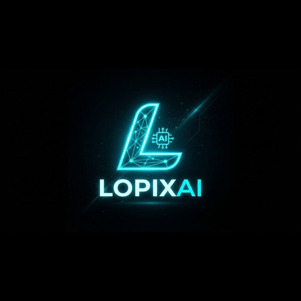

LopixAI
Windows için yerel ve akıllı masaüstü yapay zeka asistanı. Gemini API entegrasyonu, çevrimdışı komut modu, DPAPI şifreli kasa ve ChatGPT tarzı modern arayüz.
SHA-256: 8D41BFD57CEA062252A31CA542FD4C2C64E6B6ABA977402652A2F765E021C43B